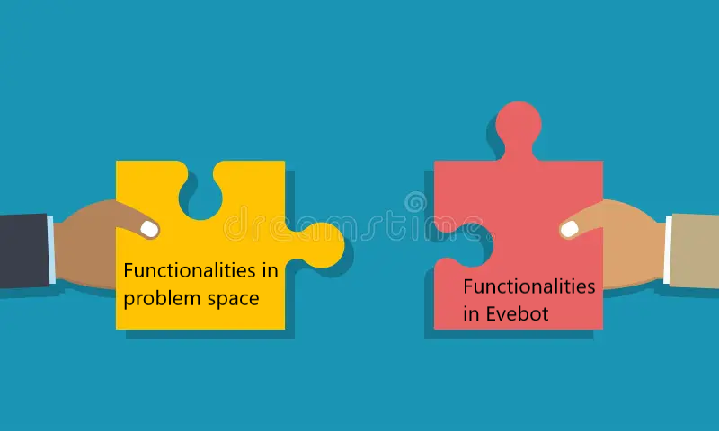
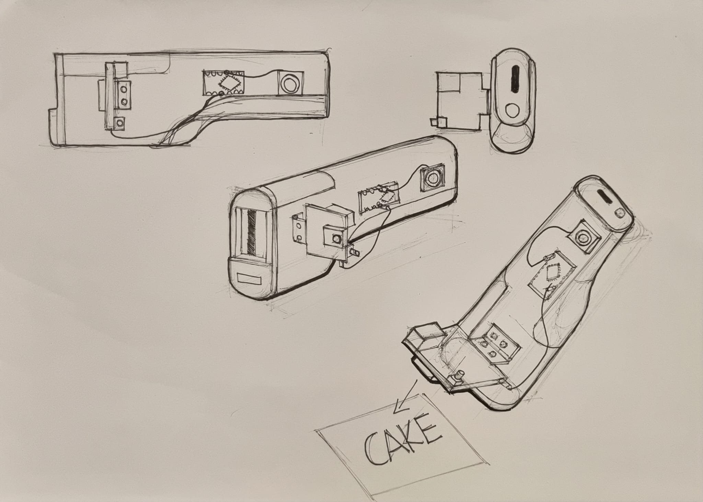

3D Food Printing Innovation

Objective of the Project
Objective of this project: To develop a System Design and Prototype for an innovative food printing system. The goal is to create a system that enhances the presentation, customization, and efficiency of food preparation while considering the needs of various stakeholders, such as restaurants, caterers, and consumers.
Understanding the Problem Space
At the beginning of the project, my team and I used the project specifications as our starting point. We first needed to understand the needs in the 3D printed food industry, which led us to explore the problem space. By studying various domains where 3D printing is utilized, we analyzed different functionalities and the needs they addressed. Through my research on "Elderly Foods," I discovered useful functionalities like customizing taste and flavor, which we incorporated into our solution space. Additionally, I explored 3D printed cookies that utilize waste products, providing further insights for our project.
Solution Space Exploration
After the team consolidated a list of functionalities and needs from other domains into the problem space, we moved to the solution space. Here, the entire list of functionalities was scrutinized for clashing elements, such as laser food engraving and inkjet printing, which were logically clashing. The team removed functionalities that were not feasible.
Iterating Between Problem and Solution Spaces
We realized that many of our functionalities had overlaps, which was not helping with innovation. So, we decided to head back to the problem space and see how similar functionalities were used in domains other than 3D food printing in the hopes of finding an alternative way to creatively deploy the functionality in the food domain. For example, upcycling food waste like wheat and grape pomace to 3D print cookies focuses on reusing food waste. A similar functionality would be in agriculture where agricultural residues are used to make biofuels. However, this approach had little success as the application of the functionalities in other domains did not fit the solution due to domain incompatibility.
Reverse Engineering Into Other Domains
Next, we decided to do the reverse: instead of porting functionalities from other domains into the solution space, we ported existing functionalities in the solution space into other domains. I explored several disability domains, including depression, bulimia, obesity, but Pica stood out the most and I dived deeper into it. Pica is a form of compulsive disorder where the user has the strong urge to eat inedible objects. There is a huge range of those objects, and the user can be drawn to them for a combination of reasons, including taste, smell, texture, and appearance. However, there was no proper cure for this and the existing solution was aversion therapy, which is controversial.
Addressing Constraints and Finding Opportunities
A possible opportunity here was to take advantage of the customizable functionalities of 3D food printing to print edible food that resembles the objects the user has urges to eat. Since a common theme of Pica is children getting injured because of eating inedible objects, this could at least solve the direct need of preventing injury to children. This seemed like a strong candidate solution… until we went to the solution space.
We encountered a big issue: the Evebot, a handheld 2D inkjet printer, was a permanent constraint in the solution space. This posed a huge constraint as it eliminated almost any functionality derived from 3D printing. This unexpected issue prompted us to iterate back to the problem space and change our direction. We established the functionalities of the Evebot as a constraint, meaning any functionalities we port over from the problem space MUST fit with Evebot.
We worked backwards from the solution space into the problem space and decided to search for opportunities that were still within reach of Evebot’s capabilities. Two possible domains were identified: Inkjet Binding and Blindness. The team split into two to tackle these domains and determine which had the best viability.
Innovations for Accessibility
For blindness, a need was identified where individuals with blindness struggle to write and fill out forms. This is because they do not know where to align the pen on the paper. An experimental innovation, WiYG (Write it Yourself Guide), was formed, which uses the frontal phone camera to give feedback to the user to align the pen. Since Evebot is also a pen, this is a problem that people with blindness could face with Evebot. The opportunity here would be that since Evebot is a flexible tool, a static solution like an app that tells you where to align the pen on the form would not be applicable. Thus, an idea was born: for Evebot to be more accessible for the blind, it needs to provide feedback about alignment. However, the alignment has to be customizable to complement the flexibility of Evebot.
So, learning from the research, a similar but more adaptable solution can be crafted. By attaching an object recognition camera, it is able to send signals to the microcronteller if it detects a specified object or pattern. Meaning it could be set up to inform the user of proper alignment by hooking up the microcontoller to a mini speaker.
Although this solution was not used by the team in the end due other already existing solutions, it still shows the process of creating an idea from scratch with the unique way of drawing inspiration from other domains, abstracting its core idea and implementing it into our domain of choice.
Back to Projects